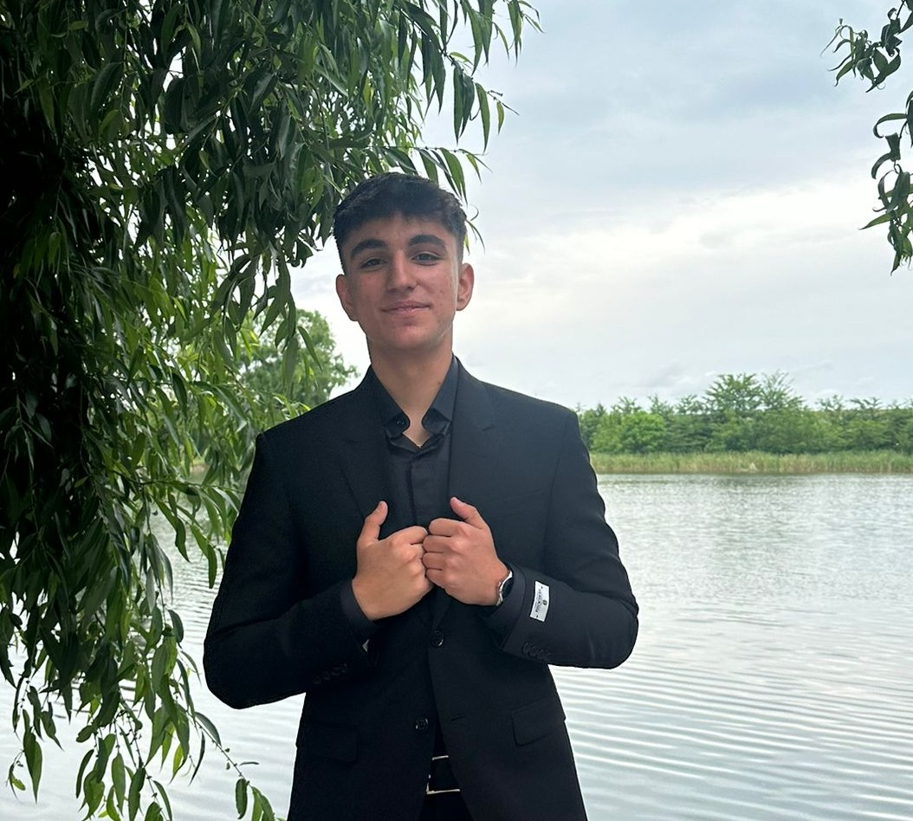

Despre mine
Student in anul II la Facultatea de Automatica si Calculatoare, specializarea Ingineria Sistemelor, cu interes puternic pentru tehnologie si programare. Detin cunostinte de baza in programare, electronica si automatizari, iar motivatia mea principala este sa imi dezvolt competentele prin proiecte practice si experiente aplicative relevante. Caut oportunitati care sa imi permita sa aplic conceptele teoretice in contexte reale si sa acumulez experienta profesionala.

Fii schimbarea pe care vrei să o vezi în lume.